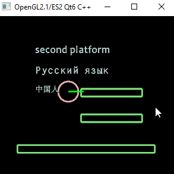

Email: 
My step by step tutorials for Windows 10, 64-bit:
SDL3, Android, WebAssembly, and OpenGL ES 2.0:
- How to run SDL3 app on Web with WebAssembly
- How to run SDL3 app on Android
- How to run SDL3 with OpenGL ES 2.0 on WebAssembly
- How to run SDL3 with OpenGL ES 2.0 on Android
- Convert rendering using the SDL3 API to rendering using OpenGL ES 2.0
Deploy:
- Distribute your builds on the free 'www.netlify.com' hosting
- Activate a developer mode on your device to debug with USB-cable
My demos:
- Loading models from DAE COLLADA using Qt6, OpenGL ES 2.0 for Android, Desktop, and WebAssembly: https://github.com/8Observer8/load-3d-models-dae-openglwindow-opengles2-qt6-cpp
- Super Mario Clone
-
Co-op room with Jill This demo uses free hosting from Render.com. You must wait 15-20 seconds to start the server for the first time. The server on a free hosting falls asleep 30 minutes after the last activity.

- Based on RE1
- Simple lighthouse
-
Output of English, Russian and Chinese fonts with stroke and Distance Field (the text is not pixelated when the camera zooms in) on JS and Rollup. Fonts converted to Distance Field using Hiero. Demo in the browser

-
Imported door animation for Blender from COLLADA format (.dae). Click detection is with color ID method. There are shadows. Demo in browser

-
I placed tiles and colliders in Tiled. Packed tiles and sprites into one texture atlas using Free Texture Packer. Physics at box2d/core. Drawn with pure WebGL 1.0 and linear algebra with glMatrix. Demo in browser

- Debug Drawer, OpenGL ES 2.0, Qt6, C++. Download APK
- OpenAL example to play music in Qt6 and C++. Download APK
-
Custom buttons in OpenGL 2.1 on QOpenGLWindow. GitHub repo

-
Detecting objects with a ray in Box2D, OpenGL 2.1/ES2, Qt6, C++
Android:

Desktop:
- Demo for Windows 10, 64-bits (7.99 MB)
- APK-file for Android (8.24 MB)
- Source code on Boosty
- Source code on GitHub